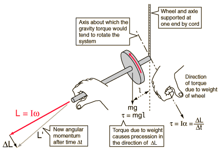

Precession Torque
The spin angular momentum
is along the rotation axis as
shown, but the torque about
the support point is in a
direction perpendicular to the angular
momentum. The torque produces a change
in L which is perpendicular to L.
Such a change causes a change
in direction of L as shown
but not a change in its size.
This circular motion
is called precession.

If the wheel is not spinning, the apparatus just rotates downward toward a vertical orientation. If you curl the fingers of your right hand in the direction of that expected rotation, then your thumb will point perpendicular to the spin axis in the direction of the torque produced by gravity. The tip of the angular momentum vector, and therefore the axle of the wheel, will precess in that direction.
|